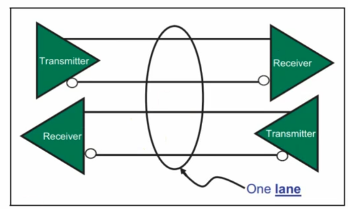
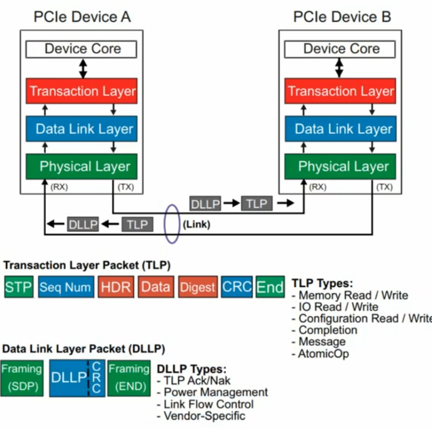

26 PCIE
PCIE
拓扑结构
PCIE并不是像IIC/PCI那样的共享并行总线式结构，它是点对点通信的串行总线
- 点对点通信：不存在总线仲裁、广播冲突等问题
- 串行通信：一个bit一个bit的发送数据
设备的连接呈树形结构：
1 | CPU |
在PCIE的拓扑中，有以下这些十分重要的概念：
Root Complex
Root Complex是CPU/SoC内部的PCIE控制器，是整个PCIE拓扑的起点，它有以下作用：
- 发起所有PCIe访问
- 管理PCIe地址空间
- 枚举所有PCIE设备
Root Port
Root Complex本身无法连接其他设备，需要通过Root Port，他其实就是PCIE插槽。一个CPU可以有多个PCIE插槽，一个Root Complex可以有多个Root Port
Endpoint
Endpoint是PCIE的终端设备，提供具体的功能（网络 / 存储 / 图形…）它没有下游，是叶子节点
Switch
由于Root Port数量通常有限，所以需要Switch来连接更多的设备。Switch包括：
- 1 个 Upstream Port（朝 CPU）
- 多个 Downstream Port（朝设备）
Bridge
PCIE拓扑中有3种Port：Root、Upstream、Downstream。这些Port都是物理上存在的，并且不是简单的接口，他们是有自己的配置空间的逻辑设备
这些Port也被称为Bridge，因为他们2侧连接的都是不同的Bus
Bus/Device/Function
使用lspci会看到00:1c.0这样的东西，这其实是Bus:Device.Function
PCIE树的每一层都是一个Bus、每个Bus下可以挂多个设备（最多32个）、每个设备最多有8个功能
配置空间
每个PCIE设备都有一个配置空间（本质上是个寄存器）CPU通过读取PCIE的配置空间，来了解这个PCIE设备的一些具体信息，从而使用它
由于所有PCIE设备都有，所以配置空间寄存器的大小和结构是标准化的
- 配置空间大小：64B(PCI协议引入的基本配置信息) + 4KB(PCIE协议引入的扩展配置信息)
配置空间寄存器的地址定义如下：
1 | Offset 内容 |
可以看到，配置空间主要包含了以下信息：
- 设备识别：Vendor ID、Device ID、Class Code
- 分配资源：BAR
- 启用能力：MSI/MSI-X、PCIe features
BAR
CPU在初始化PCIE设备时，会将PCIE地址空间的一些内存（寄存器）映射到CPU的地址空间，这样CPU就可以像访问DDR一样访问PCIE设备了。这种映射的实现靠的就是BAR(Base Address Register)
BAR其实是配置空间寄存器的一部分，位于配置空间的0x10~0x24这几个地址。每个BAR是一个32/64bit的寄存器，且存的不是纯地址数据，而包括以下几部分：
- 映射的类型（MMIO / IO）
- 映射起始地址
- 地址大小
BAR寄存器通常包括2部分：[address|flags]，flags通常有以下字段：
| bit | 含义 |
|---|---|
| bit0 | 0 = memory BAR |
| bit1-2 | type（32/64bit） |
| bit3 | prefetchable |
对于BAR映射的那段内存，需要通过ioremap进行映射，CPU通过write/store这样的汇编指令访问
1 | struct pci_dev *pdev; |
如何通过BAR里的数据得知请求映射内存的大小？
1.CPU往BAR里写0xFFFFFFFF
2.对应BAR会根据实际需要映射的内存大小返回一个mask，比如0xFFFFF000
3.大小通过以下公式计算：size = ~mask + 1
- 低12位为0，则实际大小为0x1000 = 4KB
中断
PCIE有3个中断机制
INTx
该方式使用一根信号线通知CPU发生中断
1 | 设备 ---- INTA# ---- CPU |
该方式有以下缺点：
- 所有设备共享中断线，易发生冲突，且CPU还得一个设备一个设备的查看到底是谁发生了中断
MSI
该方式不再用物理的信号线通知CPU发生中断，设备发生中断时，会往一个固定的地址写值，CPU读取到对应地址的值是中断时，即可触发中断
MSI-X
MSI-X是MSI的增强版，维护了一个vector表（类似CPU的中断向量表）来记录每个value对应哪个PCIE设备的中断
1 | MSI-X Table |
硬件接口
PCIE每个方向的数据由2根差分串行信号传输，发送/接收2个方向一共就有4根线：TX+、TX-、RX+、RX-。一对发送 + 接收信号线的双向数据线被称为一个Lane：

一个PCIE设备可能有多个Lane：
- Lane越多，数据带宽越大
- 2个PCIE的链接成为一个Link
- 一个Link最多32条Lane，我们常看见的x1、x8、x16指的其实就是Lane的数量
如何理解PCIE是串行的？
PCIE桥和PCIE设备通信时，数据都是一位一位发送的，一组数据(addr+data+校验位)会组成一个数据帧，PCIE设备接收完一个数据帧后，进行解析和校验，最后才获取数据。这和串口非常像啊！！

驱动框架
Linux下PCI和PCIE设备用的都是同一个驱动框架PCI Subsystem，从软件的角度并没有对2种协议进行区分。从总体上来看，对于该类设备，还是遵循着Linux驱动框架种的”device-bus-driver“设计思想，有以下3个核心结构体：
pci_dev
pci_driver
pci_bus
匹配机制
PCIE设备和驱动的匹配和之前学过的常见字符设备/IIC/SPI都不太一样，它驱动的调用过程如下：
1 | boot |
后者的匹配过程如下：
1 | 设备树 (DTS) |
IIC之类的设备需要在设备树中对设备进行描述，而PCIE并不需要。本质上是因为前者需要软件描述硬件，而PCIE是一种自描述的设备，RC可以对各个Bus进行扫描，通过读取配置空间即可了解各个PCIE设备的详细信息，进而创建pci_dev实例